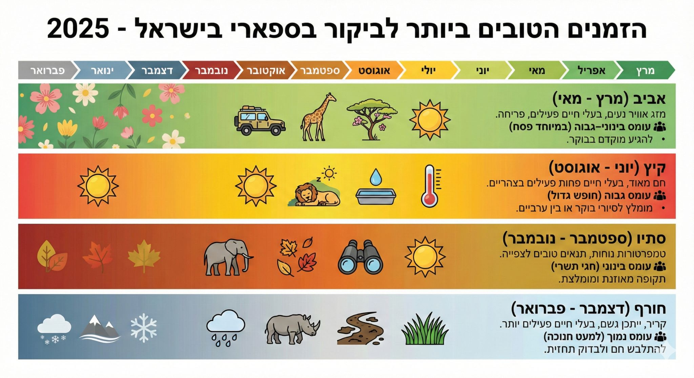

ננו בננה פרו מסוגל לאסוף מידע מהאינטרנט וליצור עיצוב שמבוסס על מידע אמיתי ועדכני, כמו למשל הבקשה הפשוטה הזאת: ״צור אינפוגרפיקה של
פורסם במקור ב LinkedIn
ננו בננה פרו מסוגל לאסוף מידע מהאינטרנט וליצור עיצוב שמבוסס על מידע אמיתי ועדכני, כמו למשל הבקשה הפשוטה הזאת: ״צור אינפוגרפיקה של הזמנים הטובים ביותר לבקר בספארי בשנת 2025 בהתבסס על המגמות הנוכחיות״
